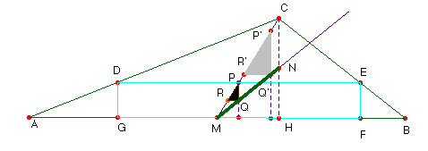

Solución del profesor de Matemáticas del IES Fray Luis de León de Salamanca Saturnino Campo Ruiz
Problema nº 76. Hallar un lugar geométrico.
Hallar el lugar geométrico de los centros de los rectángulos inscritos en un triángulo de lados 7 cm., 5 cm., y 3 cm.

El método habitual para hallar el centro de un rectángulo es trazar sus diagonales y tomar su punto de intersección. Para el caso que nos ocupa podemos actuar de otro modo: Se toma el punto medio P de la base superior y se traza por él una altura. El punto medio de ésta es el centro Q del rectángulo DEFG. Al estar inscrito en el triángulo dado, el punto P pertenece a la mediana AM del triángulo. Tomando otro punto P’ de esta mediana y procediendo como se ha explicado antes, determinamos Q’, centro de otro rectángulo inscrito. Con los puntos P y Q, P’ y Q’ construimos los triángulos rectángulos PQR y P’Q’R’, semejantes por tener todos sus ángulos iguales y homotéticos al estar alineados P y P’, Q y Q’. Por tanto también lo están R y R’, con el centro de homotecia M, pie de la mediana del lado AB. Así pues los centros de los rectángulos inscritos están alineados.El rectángulo inscrito de menor altura (igual a cero) es el lado AB, y el de mayor altura (base nula) es la altura CH sobre AB. De ahí que el lugar geométrico pedido sea el segmento que une el punto medio de la base con el punto medio de la altura: el segmento MN.
Nota.- En el dibujo hemos tomado como unidad de medida 2 cm.